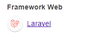
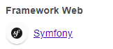

PHP Filters (PHP Wrappers)
PHP Filters
Many web applications in PHP are built with PHP frameworks:
◇ Laravel
▪ Wappalyzer
 ◇ Symfony
▪ Wappalyzer
 ◇ ...
Once found a LFI vulnerability in PHP webapp, we can utilize
PHP Wrappers to extend our LFI exploitation to reach:
◇
RCE (in the Remote Code Execution Section)
◇
PHP Source Code Disclosure (THIS)
PHP Wrappers allow to access I/O streams at the application level:
◇ standard input/output
◇ file descriptors
◇ memory streams
◇ ...
PHP wrappers can be used also for XXE attacks
PHP Input Filters
PHP Filters are a
type of PHP wrappersWe can pass an input and have it filtered by the filter we specify.
• PHP wrapper streams →
php:// ◇
PHP filter wrapper →
php://filter/ ▪ parameter: resource →
php://filter/resource=.... It is possible specify the stream we would like to apply (e.g. a local file)
▪ parameter: read →
php://filter/read=.... It is possible specify which filter apply on the input resource
Types of
PHP Filters:
•
String Filters•
Conversion Filters ◇
convert.base64-encode is the one useful for LFI attacks
•
Compression Filters•
Encryption Filters